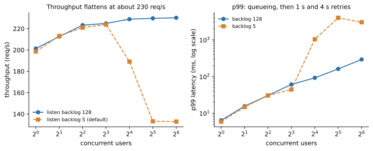
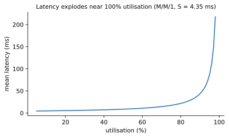

Many people building ML systems can train a model but cannot answer "will this endpoint survive ten times the traffic?", "why did p99 jump at 3 p.m.?" or "what does one thousand predictions cost us?". Those three questions decide whether a model is worth running, and a person who can answer them with measured numbers is valuable on any ML team. This chapter works on the prediction service from chapter 7. We load test it with a closed-loop load generator (a small Python tool that sends requests and times them), read the results, explain them with Little's law and a queueing curve, plan capacity, and compute cost per 1,000 predictions. Then we list capstone projects that turn this into a portfolio, and a bank of interview questions for the whole document. Everything below ran on one laptop with the standard library, NumPy and scikit-learn. Cluster and cloud steps are not run here, and all prices are assumed example prices.
Words you need:
| Word | Plain meaning |
|---|---|
| Throughput (X) | Requests completed per second. |
| Response time (W or R) | Time from sending a request to receiving the answer. |
| Concurrency (L) | Average number of requests in the system at once. |
| Percentile (p95, p99) | p99 = 99% of requests were faster than this value. |
| Closed loop | A fixed number of users; each sends the next request only after the last one returns. |
| Open loop | Requests arrive at a set rate, whether or not the system is keeping up. |
| Service time (S) | Time the server needs for one request when no one is waiting. |
| Utilisation (ρ) | Share of time the server is busy: ρ = X × S. |
| Backlog | The queue of connections waiting for the server to accept them. |
The system under test is service.py from chapter 7 (a stdlib HTTP server with a scikit-learn model, one /v1/predict call per request). The load generator loadgen.py is closed loop: users threads each send a request with random features, wait for the answer, then send the next, with zero think time. Each level runs 6 seconds after a warm-up. It prints throughput, mean, p50, p95, p99, errors, and L = X × W (explained in 14.2).
Two things to remember before you read any load test:
constant_arrival_rate executor in k6) to test overload behaviour.A Locust version of the same test (not run here, Locust could not be installed):
from locust import HttpUser, task, between
import random
class Scorer(HttpUser):
wait_time = between(0, 0) # no think time, like our closed loop
@task
def predict(self):
self.client.post("/v1/predict", json={"features": [random.gauss(0, 1) for _ in range(8)]})
# run: locust -f locustfile.py --headless -u 64 -r 8 -t 60s --host http://localhost:8000| Tool | Style | Note |
|---|---|---|
| Locust | Python code, users as classes | Easy to share data with ML code |
| k6 | JavaScript, executors for open and closed models | Light, good for CI |
| Gatling | Scala/Java DSL | Detailed reports |
Our loadgen.py | 40 lines of Python | Shows exactly what a tool does |
The server's listen backlog is the length of the queue of connections the operating system holds before the program calls accept. Python's http.server default is 5. This is the real output of our run:
users req/s mean ms p50 p95 p99 errs L=X*W
1 225.0 4.43 4.37 4.63 6.32 0 1.00
2 222.9 8.96 8.75 13.26 15.20 0 2.00
4 222.0 17.99 17.56 25.94 30.98 0 3.99
8 222.6 35.74 26.38 34.48 42.23 0 7.96
16 188.3 75.20 26.85 38.72 2018.33 0 14.16
32 134.4 79.89 26.33 36.87 2012.87 15 10.74
64 137.3 111.86 26.08 38.19 3301.46 40 15.36Before you read on: what looks strange? Hint: look at p50 and p99 at 32 users.
Reading it. Up to 8 users everything is smooth. At 16, 32 and 64 users throughput drops (from about 222 to 134 req/s), errors appear (15 and 40 failed requests), and p99 jumps to 2,000-3,300 ms while p50 stays at about 26 ms. The median is fine, the tail is awful. That shape, a calm middle and a terrible tail, is the signature of dropped connections and client-side retries rather than slow computing. When the backlog is full, the operating system drops new connection attempts, and the client retries after a delay of about 1 second, then 3 seconds, and so on (typical TCP behaviour; we did not capture packets, so treat this as the likely explanation, which fits the 1 s and 3 s steps in the p99 column). Those unlucky requests wait seconds although the server is mostly idle. Our earlier run of the same test gave p99 of 1,042 ms at 16 users, 4,012 ms at 32 and 3,030 ms at 64: the same story, with different numbers, because these tail events are random. Always repeat a test.
The only change: environment variable BACKLOG=128. Real output:
users req/s mean ms p50 p95 p99 errs L=X*W
1 230.4 4.33 4.30 4.48 4.68 0 1.00
2 227.0 8.80 8.70 13.15 13.87 0 2.00
4 221.1 18.07 17.46 26.56 34.08 0 3.99
8 224.7 35.52 34.72 44.75 50.26 0 7.98
16 223.3 71.27 70.28 81.89 88.87 0 15.92
32 223.7 141.45 140.69 157.01 166.33 0 31.65
64 225.6 277.37 281.17 302.72 310.55 0 62.58
Reading the picture. The left chart has concurrent users on the horizontal axis and throughput on the vertical axis. With the larger backlog, throughput rises to about 225-230 req/s and then stays flat: that is the capacity of this one-process server. The right chart shows p99 latency (log scale). With backlog 128, p99 grows gently, 89 ms at 16 users, 166 ms at 32, 311 ms at 64. With backlog 5, p99 jumps to seconds. The bend is the retry steps. The model, the code and the hardware are the same in both runs; one operating-system setting changed p99 by 10 to 20 times.
Problem 14.1.1 From run 2, what is the maximum throughput, the service time per request, and why does the mean rise with users beyond 4?
| Formula | service time S = 1 ÷ maximum throughput |
|---|---|
| Plug in | S = 1 ÷ 225 (the plateau) |
| Compute | 1 ÷ 225 = 0.00444 s = 4.4 ms. With one user, the mean was 4.33 ms, which agrees. |
| Answer | The server completes about 225 requests per second and needs about 4.4 ms per request. Past saturation, extra users only queue: 64 users × 4.44 ms ≈ 284 ms, close to the measured mean of 277 ms. |
| Check | 64 ÷ 225.6 = 0.2837 s = 283.7 ms, against the measured 277.37 ms (within 2.5%). |
| Why it matters | In a saturated closed-loop test W ≈ N × S. Latency grows in a straight line with users, and throughput stays flat. That is how you spot saturation. |
Check yourself
L = X × WL = average number of requests in the system, X = throughput, W = average time a request spends in the system. For a closed loop with zero think time, L equals the number of users. With think time Z between requests: N = X × (W + Z).
The last column of our table is exactly this. For run 2 at 64 users: X = 225.6, W = 0.27737 s, so L = 225.6 × 0.27737 = 62.58, close to the true 64 (the small gap is start-up and shut-down time of each 6-second test). At 16 users, 15.92 against 16. Little's law is how you check whether a load test is honest: if X × W does not match the number of users in flight, something is wrong (lost requests, timeouts not counted, or a bug in the tool).
In run 1 at 32 users, L = 10.74 instead of 32. That is a red flag, not a success: the clients spent most of their time in connection retries and failed requests, which our latency numbers do not include, so X × W undercounts. The law told us the test was missing data.
Problem 14.2.1 A load test has 50 users, each pausing 2 seconds between requests (think time). The measured throughput is 20 requests per second. What is the average response time?
| Formula | N = X × (W + Z), so W = N ÷ X − Z |
|---|---|
| Plug in | W = 50 ÷ 20 − 2 |
| Compute | 50 ÷ 20 = 2.5; 2.5 − 2 = 0.5 |
| Answer | The average response time is 0.5 seconds. |
| Check | X × (W + Z) = 20 × (0.5 + 2) = 20 × 2.5 = 50 users. |
| Why it matters | You can derive response time from throughput and users even if a tool omitted it, and you can detect bad reports. |
Problem 14.2.2 A service has an average of 12 requests in the system at peak and the average response time is 150 ms. What throughput is it carrying?
| Formula | X = L ÷ W |
|---|---|
| Plug in | X = 12 ÷ 0.150 |
| Compute | 12 ÷ 0.15 = 80 |
| Answer | 80 requests per second. |
| Check | L = X × W = 80 × 0.15 = 12. |
| Why it matters | Dashboards often show concurrency and latency but not throughput; the law fills the gap. |
Look at an open-loop system where requests arrive randomly at rate λ and each takes S seconds on one server. The standard M/M/1 queue model (M = random arrivals, random service times, 1 server) says the mean response time is:
R = S ÷ (1 − ρ) where ρ = λ × SThis is a model, not a law, and real servers deviate (our service times are not exponential, and there are several threads). But it explains the shape. With S = 4.35 ms (1 ÷ 230 req/s), real output of ch14.py:
service time S = 4.35 ms, max throughput = 230 req/s
rho arrival/s M/M/1 mean R ms
0.1 23.0 4.8
0.3 69.0 6.2
0.5 115.0 8.7
0.7 161.0 14.5
0.8 184.0 21.7
0.9 207.0 43.5
0.95 218.5 87.0
0.99 227.7 434.8
closed loop prediction R = N*S for N=64: 278.3 ms (measured 271.9)(In the latest run the measured value for 64 users was 277.4 ms; the prediction of 278.3 ms is within 1% of it.)

Reading the picture. The horizontal axis is utilisation from 0 to 100%. The vertical axis is mean latency. The line is nearly flat up to 50-60% (8.7 ms at 50%, close to the 4.35 ms with no queue), bends upward around 80%, and shoots up near 100%: at 90% it is 10 times the service time, at 99% it is 100 times. Going from 90% to 95% busy (5 points) doubles the latency from 43.5 to 87 ms.
Problem 14.2.3 Using R = S ÷ (1 − ρ) with S = 4.35 ms, what is the mean latency at 80% utilisation, and at what arrival rate does that occur?
| Formula | R = S ÷ (1 − ρ); arrival rate λ = ρ ÷ S |
|---|---|
| Plug in | R = 4.35 ÷ (1 − 0.8); λ = 0.8 ÷ 0.00435 |
| Compute | 1 − 0.8 = 0.2, so R = 4.35 ÷ 0.2 = 21.75 ms. λ = 0.8 ÷ 0.00435 = 183.9 per second. |
| Answer | About 21.7 ms at about 184 req/s. That is 5 times the unloaded service time. |
| Check | The table printed 0.8 184.0 21.7. At ρ = 0.8, the queue term is 1 ÷ 0.2 = 5. |
| Why it matters | This is why you do not run services at 90% or higher: a small extra load causes a big latency jump. |
Problem 14.2.4 Your latency target is a mean of 20 ms and S is 4.35 ms. What is the highest utilisation allowed by the M/M/1 model?
| Formula | R = S ÷ (1 − ρ), so ρ = 1 − S ÷ R |
|---|---|
| Plug in | ρ = 1 − 4.35 ÷ 20 |
| Compute | 4.35 ÷ 20 = 0.2175; 1 − 0.2175 = 0.7825 |
| Answer | About 78%, which is 0.7825 × 230 ≈ 180 req/s per instance. |
| Check | R at 0.7825 = 4.35 ÷ 0.2175 = 20.0 ms. |
| Why it matters | This turns a latency target into a capacity number. In practice you test it and use the tail (p95 or p99), where utilisation must be lower still. A common planning target is 50-70%. |
Applications
L = X × W.Check yourself
L mean in Little's law? Answer: the average number of requests inside the system (waiting plus being served).Steps, using our measured 230 req/s maximum per instance:
C (from a load test).u (say 60%) so the latency stays on the flat part of the curve and a traffic burst has room.P.n = ceil(P ÷ (C × u)).The forecast can start simple: a straight-line trend through weekly peak throughput. Weekly peaks in requests per second for 8 weeks: 120, 128, 131, 140, 152, 155, 166, 171. Real output from ch14.py:
trend: peak = 111.6 + 7.51*week
week 9: forecast peak 179 req/s -> instances at 60% target util: 2
week 16: forecast peak 232 req/s -> instances at 60% target util: 2
week 26: forecast peak 307 req/s -> instances at 60% target util: 3Problem 14.3.1 Check the week 16 row by hand: forecast peak, instances at 60% target utilisation, and instances with N+1.
| Formula | peak = 111.6 + 7.51 × week; n = ceil(peak ÷ (230 × 0.6)) |
|---|---|
| Plug in | peak = 111.6 + 7.51 × 16; capacity per instance at target = 230 × 0.6 |
| Compute | 7.51 × 16 = 120.16; 111.6 + 120.16 = 231.8 (printed 232). 230 × 0.6 = 138. 231.8 ÷ 138 = 1.68, so ceil = 2. Add one: 3. |
| Answer | 2 instances meet the 60% target; plan 3 for N+1. |
| Check | With 2 instances, each carries 116 req/s, which is 50% utilisation. If one fails, the survivor must carry 232 req/s, above its 230 maximum, so the service would fail. With 3 instances, losing one leaves 2 at 116 each, still fine. |
| Why it matters | The raw number is not the answer; the failure case is. Always test "what if one instance is gone?". |
Problem 14.3.2 The forecast is a straight line fitted to 8 points. Name two ways it can mislead.
| Step 1 | Traffic is not linear: promotions, month-end peaks and seasons break the trend (add seasonality or use the known calendar). |
|---|---|
| Step 2 | A straight line extended far (26 weeks from 8 weeks of data) has wide uncertainty; refit every week and keep a safety margin. |
| Answer | Seasonality and extrapolation risk. Revisit the forecast regularly and add a buffer for events. |
| Check | Compare each week's forecast with what actually happened and track the error. |
| Why it matters | A capacity plan is a living number, not a one-time report. |
cost per 1k predictions = (instance $ per hour ÷ (requests per second × 3600)) × 1000Throughput is the key: the same instance at lower utilisation costs more per prediction. Real output (assumed hourly prices of $0.10 and $0.40):
instance $0.1/h at 100% utilisation (230.0 req/s): $0.00012 per 1k predictions
instance $0.1/h at 50% utilisation (115.0 req/s): $0.00024 per 1k predictions
instance $0.1/h at 20% utilisation ( 46.0 req/s): $0.00060 per 1k predictions
instance $0.4/h at 100% utilisation (230.0 req/s): $0.00048 per 1k predictions
instance $0.4/h at 50% utilisation (115.0 req/s): $0.00097 per 1k predictions
instance $0.4/h at 20% utilisation ( 46.0 req/s): $0.00242 per 1k predictionsProblem 14.3.3 Check one row by hand: $0.40 per hour at 50% utilisation.
| Formula | cost per 1k = price ÷ (rps × 3600) × 1000 |
|---|---|
| Plug in | 0.40 ÷ (115 × 3600) × 1000 |
| Compute | 115 × 3600 = 414,000 predictions per hour; 0.40 ÷ 414,000 = 0.000000966; × 1000 = 0.000966 |
| Answer | About $0.00097 per 1,000 predictions, so one million predictions cost about $0.97. |
| Check | 414,000 predictions per hour at $0.40 per hour means about 1.035 million predictions per dollar, and 1,000 ÷ 1.035 million = 0.000966 dollars. |
| Why it matters | This simple service is cheap. For a model that needs a GPU at $2.50 per hour and 20 requests per second, the same formula gives 2.50 ÷ (20 × 3600) × 1000 = $0.0347 per 1,000, about 290 times more per prediction than the $0.00012 CPU case. Batching (chapter 7) and utilisation are the biggest levers. |
Problem 14.3.4 Utilisation drops from 100% to 20% because of over-provisioning. By what factor does the unit cost rise, and what is the monthly waste for one $0.10 per hour instance (730 hours)?
| Formula | unit cost is proportional to 1 ÷ utilisation; waste = price × hours × (1 − utilisation) |
|---|---|
| Plug in | factor = 1 ÷ 0.2; waste = 0.10 × 730 × 0.8 |
| Compute | factor = 5 (0.00060 ÷ 0.00012 = 5); waste = 73 × 0.8 = 58.4 |
| Answer | Unit cost rises 5 times; about $58 of $73 a month is spent on idle capacity. |
| Check | 20% utilisation means 80% idle, and 0.8 × $73 = $58.40. |
| Why it matters | Autoscaling, right-sizing and reserved-versus-on-demand mixes (chapter 12) are how you lift utilisation without hurting latency. You are balancing two curves: latency rises with utilisation, and cost per prediction falls with it. |
Applications
Check yourself
Each build's load test gives a latency sample. A new build looks "a bit slower": is it real or noise? Compare the p95 values and ask how much they could differ by chance. A bootstrap resamples the data with replacement thousands of times to estimate the spread. If the 95% interval of the difference excludes zero, call it a regression.
import numpy as np
rng = np.random.default_rng(7)
build_a = rng.lognormal(mean=np.log(25), sigma=0.35, size=400)
build_b = rng.lognormal(mean=np.log(25), sigma=0.35, size=400) # same code, new random sample
build_c = rng.lognormal(mean=np.log(28), sigma=0.35, size=400) # about 12% slower
def boot_diff(x, y, q=95, n=2000):
d = []
for _ in range(n):
d.append(np.percentile(rng.choice(y, len(y)), q) - np.percentile(rng.choice(x, len(x)), q))
return np.percentile(d, [2.5, 97.5])
for name, y in [("B (same code)", build_b), ("C (12% slower)", build_c)]:
lo, hi = boot_diff(build_a, y)
print(f"{name}: p95 A={np.percentile(build_a,95):.1f} ms, new={np.percentile(y,95):.1f} ms, diff 95% CI [{lo:.1f}, {hi:.1f}] ms ->", "REGRESSION" if lo > 0 else "no clear change")Real output:
B (same code): p95 A=41.7 ms, new=43.1 ms, diff 95% CI [-1.9, 6.6] ms -> no clear change
C (12% slower): p95 A=41.7 ms, new=50.8 ms, diff 95% CI [2.8, 14.0] ms -> REGRESSIONExplain. Build B is the same code, but its p95 differs by 1.4 ms just by chance, and the interval [−1.9, 6.6] contains 0, so we do not call a regression. Build C is truly slower: the interval [2.8, 14.0] is entirely above 0, so we flag it. The interval is wide, because p95 from 400 samples is noisy. More samples or longer tests narrow it. (The data here is simulated; with your own test results you would load the real response times.)
A simple, honest baseline: z-score against recent history (chapter 10 and the Math PDF cover z-scores).
base = rng.normal(100, 5, 60); new = np.array([101, 98, 140, 99])
mu, sd = base.mean(), base.std(ddof=1)
print("z-scores:", np.round((new-mu)/sd, 1), "| flagged:", [int(i) for i in np.where(abs((new-mu)/sd) > 3)[0]])Real output:
z-scores: [ 0.5 -0.1 7.9 0.1] | flagged: [2]Explain. The baseline mean is near 100 with spread near 5. The third new reading, 140, is almost 8 standard deviations away, so it is flagged. Rule of thumb: |z| above 3 is rare under normal noise. Real metrics have daily cycles, trends and spikes, so serious tools model seasonality, but always start with a baseline like this and measure precision and recall of your alerts (alert fatigue is a real cost).
| Topic | What it is | Starter |
|---|---|---|
| Metrics, logs, traces | The three pillars of observability | Prometheus and Grafana for metrics, OpenTelemetry for traces (chapters 7, 10, 13) |
| SLO-based alerting | Alert when the error budget burns fast, not on every blip | Chapter 12 availability maths |
| AIOps | Machine learning on operations data: anomaly detection, log clustering, alert de-duplication, root-cause ranking | Start with z-scores and rolling percentiles |
| Test-data warehouse | Load test results stored in tables, trended by build | One row per run: build, users, X, p50, p95, p99, errors, cost |
| Pipeline testing | Load, soak and chaos tests on data pipelines and Kafka consumers | Backfill time, freshness SLA |
Applications
Check yourself
Build in this order. Each reuses an earlier one.
| # | Project | What it proves | Chapters |
|---|---|---|---|
| 1 | Containerised model API with tests and CI | You can ship a service | 1, 2, 7, 9 |
| 2 | Tracking and registry with an automatic promotion rule (new beats champion by a margin) | You can manage versions and gates | 3, 9 |
| 3 | Load test an ML endpoint: p95 versus load, autoscaling behaviour, cost per 1,000 predictions, and a capacity plan | The most distinctive project | 14, 11, 12 |
| 4 | Drift monitoring with a simulated drift, an alert and a retraining trigger | You close the loop | 10, 6 |
| 5 | End-to-end pipeline on a cloud: data, train, register, deploy, monitor, with Terraform and a budget alert | You run the lifecycle | 4 to 12 |
| 6 | Kubernetes deployment with HPA and a canary release | You can operate at scale | 8, 11 |
| 7 | LLM application with traces, cost dashboard, CI eval suite and guardrails | You can do GenAI in production form | 13 |
loadtest.svg) and the table. Publish the code.A realistic "headline" in your CV: "Load-tested a scikit-learn endpoint, found that the default listen backlog of 5 pushed p99 from 90 ms to over 1 s at 16 users, raised it to 128, and sized the cluster for 3x growth at 60 percent target utilisation, with cost per 1,000 predictions of about 0.0002 dollars at 50 percent utilisation." Every word in that sentence is something you can reproduce from this chapter (replace the numbers with your own).
Problem 14.5.1 For a capstone, you will deploy the project-5 pipeline on a cloud with a budget of Rs 2,000 per month. What three controls do you set on day one?
| Step 1 | A budget alert at 50%, 80% and 100% (chapter 12), with tags project=capstone. |
|---|---|
| Step 2 | Auto-shutdown or scale-to-zero for GPU and notebook resources outside your study hours (chapter 11). |
| Step 3 | A calendar reminder to run the cloud's teardown (terraform destroy) after each session, plus a check of the bill the next morning. |
| Answer | Budget alerts, scale-to-zero or auto-shutdown, and a teardown routine kept in code. |
| Check | Your Terraform plan should list a destroy for every resource it created. If the bill is not near zero when idle, something is still running. |
| Why it matters | Cloud practice with no cost control is the fastest way to get a surprise bill. |
Applications
Check yourself
| # | Question | Core of a good answer | Chapter |
|---|---|---|---|
| 1 | Notebook model to production: steps? | Move logic to modules, tests, config, container, CI, registry, deploy with health checks, monitor | 1, 2, 7 |
| 2 | What is training-serving skew and how do you stop it? | Different feature code or data at train and serve; share one code path, log served features, compare distributions | 1, 5 |
| 3 | How do you make training reproducible? | Seeds, pinned lock file, config in git, data version by hash, record environment, track runs | 2, 3, 4 |
| 4 | Champion versus challenger promotion? | Same test set, margin above noise, fairness and latency checks, alias move, rollback by alias | 3, 9 |
| 5 | Why a feature store? What is point-in-time correctness? | Reuse, consistency of offline and online; joining features as of the label time avoids leakage | 5 |
| 6 | Retraining pipeline design? | DAG: extract, validate, features, train, evaluate, register; idempotent tasks, retries, triggers | 6 |
| 7 | Batch, online or streaming inference? | Choose from latency and freshness needs; batch is cheapest | 1, 7 |
| 8 | How do you cut serving latency? | Batching, quantisation or distillation, ONNX, caching, right hardware, fewer features, warm pools | 7 |
| 9 | Shadow, canary, blue/green, A/B? | Shadow tests with no user impact; canary exposes a small share with metric gates; blue/green swaps fast; A/B measures business impact | 8 |
| 10 | CI/CD for ML: what is different? | Data and model tests, promotion gates, continuous training, artifacts and data versions | 9 |
| 11 | Data drift versus concept drift? | Input distribution changes versus the input-output relation changes; PSI, KS for the first; delayed labels for the second | 10 |
| 12 | Labels arrive after 30 days. How do you monitor? | Proxy metrics, input drift, performance estimation, shadow evaluation, sampled labelling | 10 |
| 13 | Pod stuck in Pending? | kubectl describe, read Events: resources, taints, selectors, quota | 11 |
| 14 | How does HPA decide, and when does it fail? | ceil(current × metric ÷ target); slow on spikes; wrong metric for GPU or memory-bound work | 11 |
| 15 | Design a secure, highly available endpoint on a cloud | Zones, private subnets, least privilege roles, TLS, autoscaling, IaC, budgets, load test | 12 |
| 16 | Spot instances for training? | Cheap but interruptible; checkpoint often and make restarts automatic | 6, 12 |
| 17 | How do you test an LLM app? | Versioned prompts, gold set in CI with floor, schema checks, judge plus human sample, injection tests | 13 |
| 18 | LLM bill doubled. Why? | Traces: tokens per request, context growth, routing, cache hit rate, retries, heavy users | 13 |
| 19 | You upgrade the embedding model. What now? | Re-embed everything, build a new index in parallel, evaluate recall, switch, keep rollback | 13 |
| 20 | Will the endpoint handle 10x traffic? | Load test to saturation, find the bottleneck, L = X × W, target utilisation, N+1, cost per 1k predictions | 14 |
| 21 | Why does p99 spike while p50 is flat? | Queueing, dropped connections and retries, GC pauses, noisy neighbours; look at errors and backlog | 14 |
| 22 | Cost per prediction? | price ÷ (rps × 3600) × 1000 at realistic utilisation | 14 |
| 23 | Security risks in ML systems? | Secrets in code, pickle loading, injection, data leakage, over-broad IAM, model theft, poisoning | 7, 12, 13 |
| 24 | When would you NOT use Kubernetes or a feature store? | One small model, small team: managed endpoint or plain code is cheaper and simpler | 5, 11 |
Interview question A: "Our model endpoint is slow in the evenings. How do you investigate?"
Interview question B: "Design ML serving for fraud scoring: 2,000 requests per second, p99 under 50 ms."
Check yourself
L = X × W, plan capacity at target utilisation with N+1, report cost.W ≈ N × S).L = X × W checks that a test is honest: 62.58 against 64 users in run 2; 10.74 against 32 in run 1 exposed missing data.S ÷ (1 − ρ): at 90% busy it is 10 times service time. Plan for 50-70% utilisation.n = ceil(peak ÷ (capacity × target utilisation)), then add one for N+1. Check the failure case.| Formula / Pattern | Meaning |
|---|---|
L = X × W | Little's law |
N = X × (W + Z) | Closed loop with think time |
S = 1 ÷ max throughput | Service time |
R = S ÷ (1 − ρ), ρ = λ × S | M/M/1 mean response time (model) |
n = ceil(P ÷ (C × u)) (+1) | Instances needed |
cost per 1k = price ÷ (rps × 3600) × 1000 | Unit cost |
| bootstrap CI of a p95 difference | Regression test |
z = (x − mean) ÷ sd, flag at 3 | Simple anomaly rule |
Problem 14.1 (easy) A load test shows 400 requests in 10 seconds. What is the throughput? Answer: 400 ÷ 10 = 40 requests per second.
Problem 14.2 (easy) Service time is 10 ms per request on one worker. What is the maximum throughput? Answer: 1 ÷ 0.010 = 100 requests per second.
Problem 14.3 Little's law: X = 50 per second and W = 0.2 s. What is L? Answer: 50 × 0.2 = 10 requests in the system.
Problem 14.4 A test with 30 users, 1.5 s think time and X = 12 per second. Response time? Answer: W = 30 ÷ 12 − 1.5 = 2.5 − 1.5 = 1.0 s.
Problem 14.5 (compute) S = 10 ms. What is the M/M/1 mean response at ρ = 0.5, 0.9 and 0.95? Answer: 10 ÷ 0.5 = 20 ms; 10 ÷ 0.1 = 100 ms; 10 ÷ 0.05 = 200 ms.
Problem 14.6 (compute) Peak 900 rps, capacity 150 rps per instance, target 60%. Instances with N+1? Answer: 150 × 0.6 = 90 per instance. 900 ÷ 90 = 10. Plus one: 11.
Problem 14.7 (compute) A $1.20 per hour GPU instance serves 60 predictions per second at full use. Cost per 1,000 predictions? Answer: 60 × 3600 = 216,000 per hour. 1.20 ÷ 216,000 × 1000 = $0.00556. At 50% utilisation it doubles to $0.0111.
Problem 14.8 (what is the output?) A load test table shows 64 users, X = 100 per second, mean response 0.2 s, no think time. What does X × W give, and what do you conclude? Answer: 100 × 0.2 = 20, not 64. The numbers do not match, so the test lost data: timeouts or errors not counted, requests dropped, or the tool reports the wrong time. Do not trust the report until explained.
Problem 14.9 (find the bug) A team reports "p99 is fine at 200 ms" using only the successful requests while 8% of requests time out. What is wrong? Answer: Failed requests are excluded, so the tail is hidden. Report error rate beside the percentiles, count timeouts as the timeout value (or as failures), and set an SLO on both.
Problem 14.10 (scenario) Your endpoint is at 85% CPU at peak and latency doubled since last month. The team says "we still have 15% free". What do you reply? Answer: On the queue curve, 85% is past the knee: 1 ÷ (1 − 0.85) is 6.7 times the service time, and a small rise in traffic raises it sharply. Lower the autoscaling target to 60%, add capacity, and verify with a load test.
Problem 14.11 (interview) "Walk me through how you would load test an ML model API." Answer: Define the SLO (for example p95 below 100 ms at a given rate). Prepare realistic request data. Ramp users or arrival rate in stages. Record throughput, p50, p95, p99, errors, resource use. Validate with Little's law. Find the knee and the bottleneck, change one thing, repeat three times. Use open-loop arrival for overload tests. Finish with capacity, N+1 and cost per 1,000 predictions.
Problem 14.12 (interview) "Why did p99 jump to 3 seconds while the median stayed at 26 ms?" Answer: The median says most requests are served normally, so the compute is fine. A tail made of 1 s and 3 s steps suggests dropped connections and client retries because a queue (such as the listen backlog) was full. Check error counts, backlog and accept queue settings, thread or worker counts, and repeat the test with a larger backlog.
You are my patient, practical professor. I am a working professional moving into data roles, and English is my second language. Teach load testing an ML prediction endpoint: closed versus open workload models, think time, ramp stages, percentiles and error rates. Show the ideas with Locust and k6 examples, then give me 8 graded exercises with real numbers and no solutions. Grade my answers when I reply.
You are my patient, practical professor. I am a working professional moving into data roles. Teach Little's law and the M/M/1 utilisation curve with small numbers: L = X × W, think time, S ÷ (1 − ρ), and why latency explodes near 100% busy. Use a coffee shop analogy, then ask me one check question at a time and correct my mistakes.
You are my patient, practical professor. I am a working professional moving into data roles. Teach capacity planning and cost per 1,000 predictions: measured capacity per instance, target utilisation, N+1, a straight-line forecast and its weaknesses, and the unit-cost formula. Review my numbers and point out errors or missing failure cases. My numbers: [PASTE HERE]
You are my patient, practical professor. I am a working professional moving into data roles. Help me plan my capstone: a load-test report for an ML endpoint with p95 versus load, bottleneck analysis, capacity plan and cost per 1,000 predictions. Ask what I have, set a weekly schedule of one hour a day, say what to measure each week, and review my write-up when I paste it: [PASTE HERE]
You are my patient, practical professor. I am a working professional moving into data roles. Run a full MLOps mock interview covering lifecycle, reproducibility, registry, serving, deployment strategies, CI/CD, monitoring, Kubernetes, cloud, LLMOps and performance. Ask one question at a time, grade each out of 10, show a model answer, then give me my weakest three topics and a two-week practice plan.